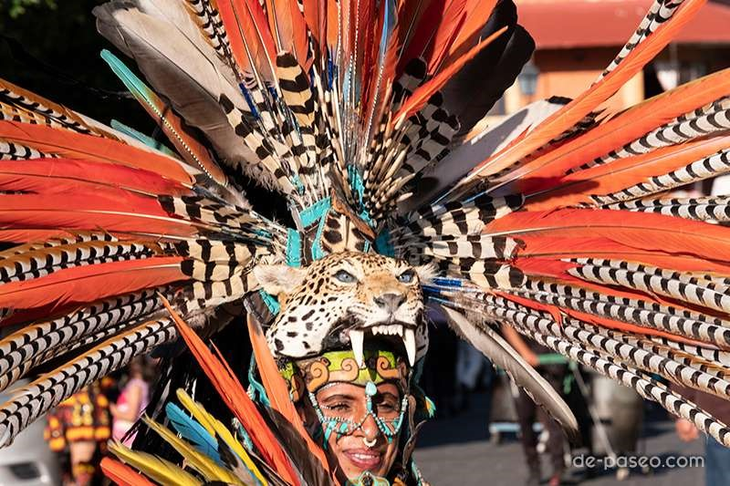

GUANAJUATO!!, Danza del torito, La danza del torito es quizás una de las más representativas entre todas las
danzas y bailes típicos de Guanajuato.
Se trata de una representación en la cual varios personajes como el caballito, la mulita, la borracha y otros
intentan derribar al personaje principal, el torito. La música que la acompaña se ejecuta con tambor y flauta.

La Danza de los Concheros: Un Vínculo con el Pasado Prehispánico
Iniciamos nuestro recorrido en Guanajuato con una de las danzas más significativas: La Danza de los Concheros.
Esta expresión dancística tiene sus raíces en la época prehispánica y representa una fusión única entre las
tradiciones indígenas y la influencia europea.
Las Pastoras de Santa Rosa: Tradición y Religiosidad
En Guanajuato, la celebración de la Virgen de Santa Rosa de Lima se manifiesta a través de la danza de Las
Pastoras.
Esta expresión cultural tiene un fuerte componente religioso y es ejecutada durante las festividades dedicadas a
la patrona de la ciudad de Santa Rosa
La Danza de las Cintas es una expresión que se lleva a cabo en diversas partes de México, y Guanajuato no es la
excepción.
Esta danza tradicional es una celebración colorida que involucra a participantes que sostienen cintas multicolores
mientras ejecutan movimientos coreografiados.
Celebración de la Unidad:
La Danza de las Cintas a menudo se realiza en festivales y eventos comunitarios. Los participantes bailan
alrededor de un poste, entrelazando las cintas durante el proceso.
Esta danza simboliza la unidad y la colaboración, resaltando la importancia de la comunidad en la preservación de
las tradiciones.
La Danza de las Moras y Cristianos
Celebración Religiosa y Cultural
La Danza de las Moras y Cristianos es una representación que combina elementos religiosos y culturales, con
reminiscencias de la lucha entre moros y cristianos durante la Reconquista en España.
En Guanajuato, esta danza adquiere una dimensión única que refleja la historia y la identidad local.
BAILE
VIDEO
ÉPOCA DEL AÑO
Danza del torito
Esta danza es popular en varias regiones de México y Centroamérica. Se lleva a cabo en diferentes momentos
del año, generalmente durante celebraciones religiosas y festivales locales. Por ejemplo, en algunas partes de
México, la Danza del Torito se presenta durante las festividades en honor a San Juan Bautista, que se celebran
el 24 de junio.
Concheros
Los concheros son un grupo de danzantes que practican la danza azteca y participan en diversas
celebraciones religiosas y culturales a lo largo del año. Su participación puede variar según las festividades
locales, pero su presencia es más común en eventos religiosos como las fiestas patronales y celebraciones en
honor a santos.
Las Pastoras de Santa Rosa
Las Pastoras de Santa Rosa: Esta danza es parte de las festividades en honor a Santa Rosa de Lima, patrona
de varios lugares en América Latina. La celebración principal de Santa Rosa de Lima tiene lugar el 30 de
agosto, pero las festividades pueden comenzar antes y continuar durante varios días, durante los cuales se
realizan diversas actividades culturales, incluida la danza de Las Pastoras.
La Danza de las Cintas
La Danza de las Cintas es una danza tradicional que se realiza en varios países de América Latina,
especialmente en México y algunos países centroamericanos. Puede realizarse en diferentes momentos del año,
como parte de celebraciones religiosas, festivales folclóricos o eventos comunitarios.
La Danza de las Moras y Cristianos
Esta danza es popular en varias regiones de España y América Latina. Se lleva a cabo durante festivales
religiosos y celebraciones locales que conmemoran eventos históricos, como la Reconquista. Las fechas de estas
festividades pueden variar según la región, pero generalmente se celebran durante los meses de verano.